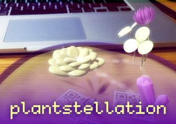

plantstellation
Plants can add life and magic to your desk, but growing them can be difficult, so let's add some virtual plants instead...
Print and cut out the markers in "printout.pdf", and arrange them in the pot on the printout. Then, install the "plantstellation.apk" app on an Android phone and point it at the markers to see the plants.

See more of my art here.